After completing this lesson, you’ll be able to:
You've created some FME Flow Workspace Apps you want to share with your colleagues to access FME functionality without having them be FME Flow users. You can share the workspace app links individually, but as you create even more apps, there will be multiple URL links for everyone to keep track of. Therefore, you will create a Gallery App that acts as a landing page for multiple Flow Apps and URLs and share it out to your colleagues as a single URL link.
Go to the FME Flow interface and log in.
If you are taking a Safe Software-hosted training course, you can access FME Flow at http://localhost/.
On the side menu, select Projects > Manage Projects. Click Import.
Add the exercise-create-a-gallery-app.fsproject file and click Import.

In the Preview Content step, allow items to be overwritten if they already exist. This project contains workspaces and workspace apps that you will integrate into a Gallery App. Then click Continue to go to the next step.
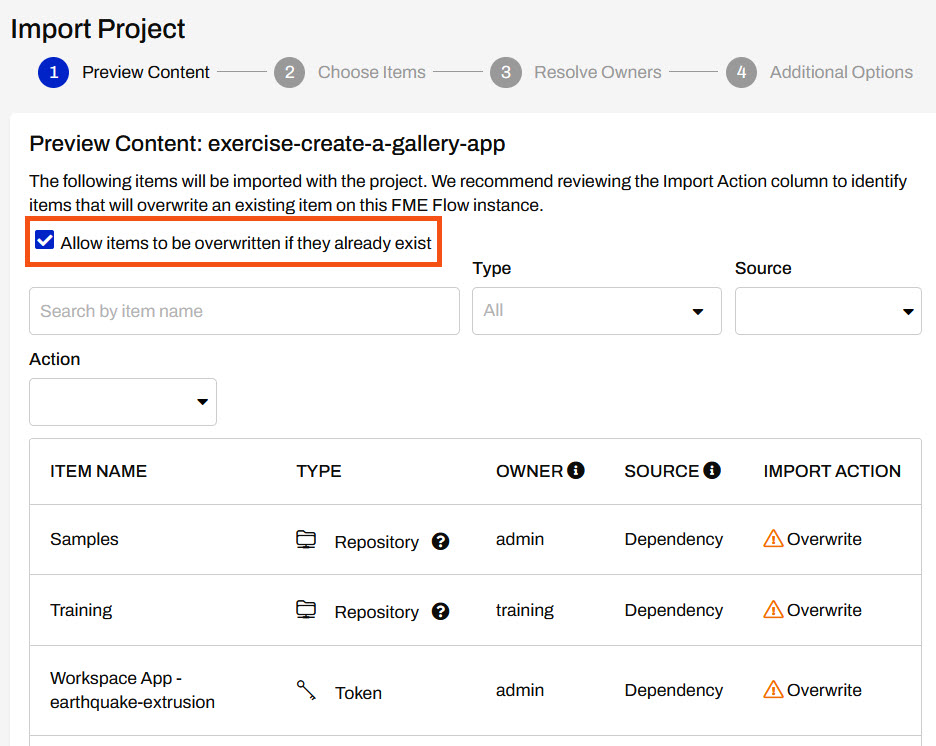
For the Choose Items step, you need to make sure all the tokens are selected to be imported. This is necessary for app permissions so the apps run successfully.
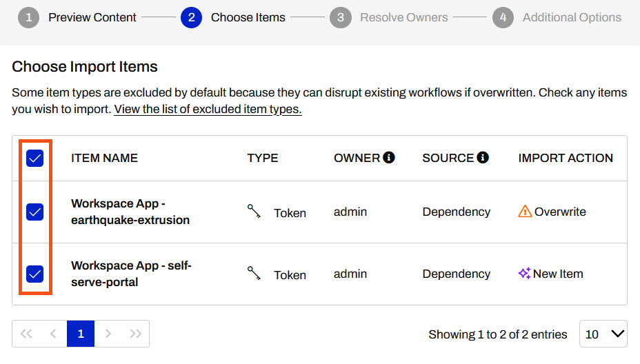
Click Continue to go through the remaining steps, accepting all options as default. On the last step, click Import Project at the bottom of the page to import all the items.
You should see the Project Import Completed with a green checkmark once the project has been imported successfully.
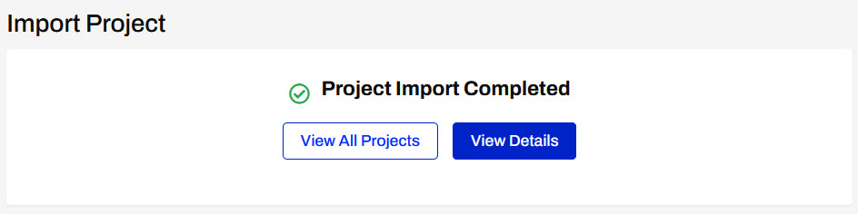
Expand Flow Apps from the side menu, then click Create Gallery App, to create a new Workspace App.
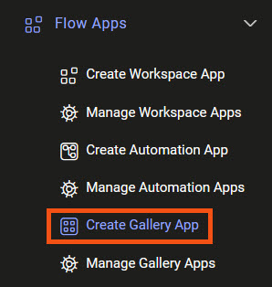
On the Create Gallery App page, give your app a name and optionally add a title and description.
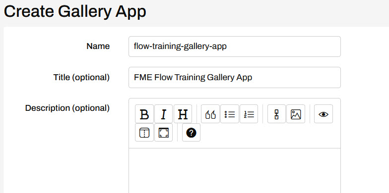
In the Links section, click Create.

For Type, select Workspace App and then select the earthquake-extrusion app. The label is the text that appears with this app on the Gallery App landing page. You can label this workspace app Earthquake Extrusion and then click Add Link to close the window.
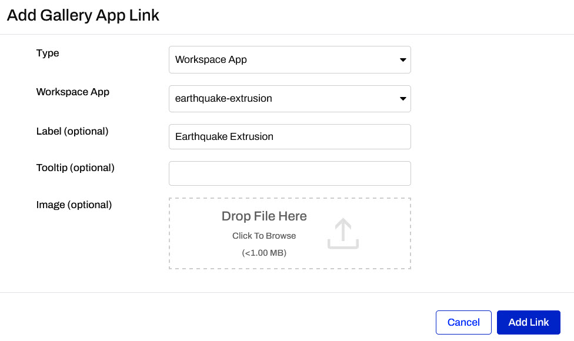
In addition to the optional Label, there's also the Tooltip and Image to customize your Gallery App links. The tooltip appears when you mouse over the link on the gallery app page. Image is a clickable icon to reference the link on the gallery app page.
You'll see the workspace app you just added in the Links section now.
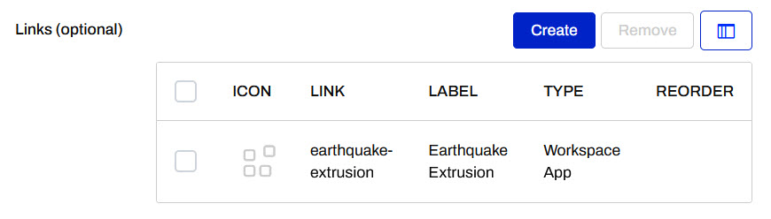
Click Create to add a second workspace app. Set this link to the self-serve-portal workspace app and label it as Self-Serve Portal.
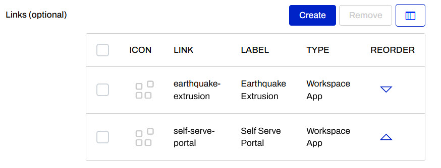
Now you have two Workspace Apps linked in your Gallery App.
In the Links section, click Create again. Configure it as follows:
| Type | URL |
| URL | https://support.safe.com/hc/en-us/articles/25407771829773-Tutorial-Getting-Started-with-FME-Flow |
| Label | Getting Started with FME Flow |
For the image, download FME Flow icon.png and add it as the Image for the Link.

Once your link settings look like this, click Add Link.
Since the Getting Started with FME Flow is introductory, you want it to appear first on your Gallery App. Click the up arrow in the Reorder column for the URL link, then click it again to move it to the top of the list.
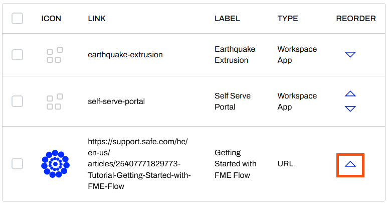
When you're done, your Links section should look like this:
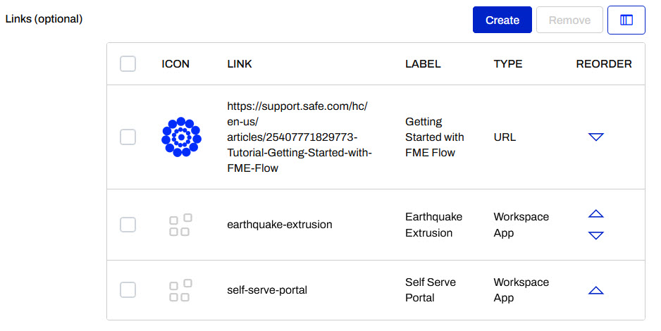
Beneath the Links section, the Customize tab allows you to add images, icons, and change the colour of your App to reflect your organization's brand. For now, we will skip this step as it is the same as customizing Workspace Apps which you completed in the previous exercise.
Scroll down to the bottom of the page and click OK to create your Gallery App.
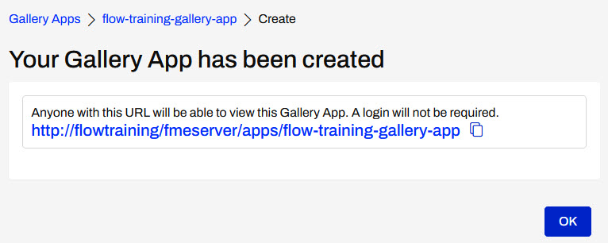
Click the generated URL to view your Gallery App. You can access each of the links you added by clicking on the icons.

Now you've created a Gallery App landing page that can be shared among colleagues to access multiple Flow Apps and a URL link. This decreases sharing and keeping track of three (or more) links down to only one link to access all of the functionality.